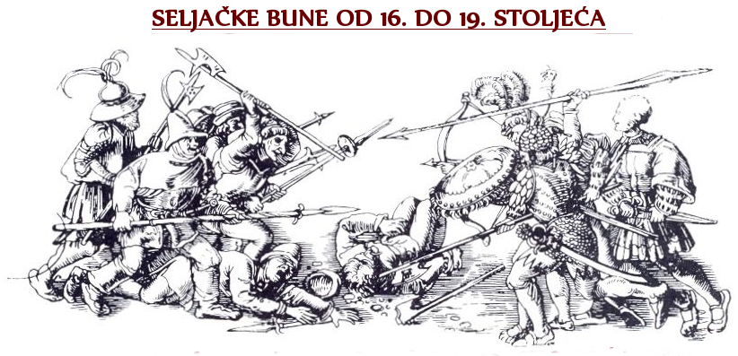

Povijesno najuzbudljiviji oblici kmetskog otpora teroru zemljovlasnika svakako su seljačke bune i ratovi, premda su oni rijetka pojava sve do razvijenoga srednjega vijeka. U ranome srednjemu vijeku bilježimo nekoliko dobro evidentiranih buna, a najranija takva na europskom tlu izbila je u Saskoj protiv Karla I. Velikog u 8. stoljeću. Razdoblje 14., 15. i 16. stoljeća karakteriziraju česti i bolje organizirani seljački ustanci, a kao katalizatori seoskog nezadovoljstva pojavljuju se kataklizmički događaji poput gladi, kuge te dugotrajnih ratova. Posljedica takvih događaja u Europi, a time i na području današnje Hrvatske, bila je svojevrsna "refeudalizacija" koju je karakterizirala sve veća ovisnost seljaka o zemljovlasniku zbog čega oni gube dotadašnje, premda skromne, osobne slobode. Osim toga, najviše ih pogađa ekonomski aspekt tadašnjeg razdoblja, jer umjesto dominantnih i za njih prihvatljivijih novčanih podavanja sad imaju više obveza u pogledu naturalnih daća, ali i više radne tlake. Prvi ustanci u tom razdoblju javljaju se na području središnje Europe, od današnje Njemačke preko Austrije i Mađarske. Takvi ustanci pravi zamah dobivaju u ranome novom vijeku.
I na području današnje Hrvatske u 16. stoljeću je zabilježeno više od 25, što manjih, što većih ustanaka seljaka, ponajviše u sjeverozapadnome dijelu zemlje. Najveći od tih ustanaka svakako je Seljačka buna iz 1573. godine pod vodstvom Ambroza Gupca, kasnije nazvanog Matija. Buna je u krvlju ugušena, a njen vođa zvjerski smaknut na Markovom trgu u Zagrebu. Seljački ustanci diljem Europe, pa i u Hrvatskoj, usprkos tome što su gušeni na isti način, nastavljaju se do u 20. stoljeće. Ipak, nakon Francuske revolucije tj. nestankom feudalnog društvenog uređenja, oni postaju dijelom širih društvenih ustanaka u okviru novih revolucija. Posljednji značajniji seljački ustanci javljaju se na području Španjolske, Tirola i dijelova okupirane Rusije tijekom napoleonskih ratova.
